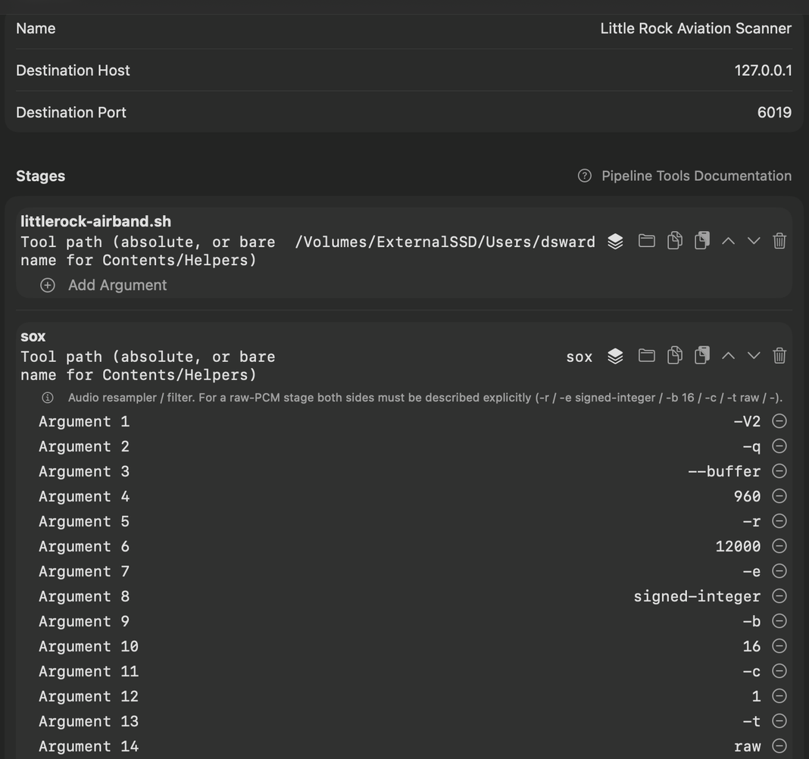

Use a shell script with rtl_fm as an audio source
ControlBooth can run any executable as
the first stage of a pipeline, including a shell script you write
yourself. That lets you build your own scanner or receiver around
rtl_fm — any channel list, gain, or squelch you
like — and still listen on every device AntennaHead streams to.
How it fits together
A ControlBooth pipeline is a chain of programs: each stage’s
output feeds the next stage’s input. Your script is stage one.
It runs rtl_fm and writes raw audio to its standard
output. A sox stage converts that audio to the format
AntennaHead expects, and ControlBooth adds the last stage itself,
which sends the audio to AntennaHead over UDP.
Your script
Starts rtl_fm with your frequencies, gain and squelch, and prints 16-bit PCM audio on stdout. Everything else it says goes to stderr.
sox
Turns the script’s 12 kHz mono audio into the 48 kHz, 2-channel, 16-bit format the receiving end requires. ControlBooth doesn’t convert for you.
PCMUDPSender
Added automatically by ControlBooth. It sends the audio to AntennaHead (port 6019 by default), which streams it to listeners.
You’ll need: ControlBooth and AntennaHead, an RTL-SDR
Blog V3, and the rtl_fm_localradio tool that ships inside
ControlBooth. Only one program can use a given RTL-SDR radio at a time, so
stop anything else that’s using it first.
Step 1: Write the script
This one scans five Little Rock Adams Field (KLIT) airband channels: tower, clearance delivery, approach/departure and ground
with a squelch, so it only produces sound when someone is
transmitting. Save it as, for example,
~/bin/airband-scan.sh, and change the frequencies to the ones
for your own airport.
#!/usr/bin/env bash
# Squelched rtl_fm airband (AM) scan of Little Rock Adams Field. PCM16LE, 12 kHz,
# mono on stdout (a sox stage resamples it to 48 kHz stereo). Messages go to
# stderr, because stdout is the audio.
set -euo pipefail
# ControlBooth is a GUI app, so it starts scripts with a short PATH.
export PATH="/opt/local/bin:/opt/homebrew/bin:/usr/local/bin:$PATH"
DEVICE=${DEVICE:-0} # RTL-SDR index (see rtl_test)
GAIN=${GAIN:-30} # tuner gain in dB
MODE=${MODE:-am} # airband voice is AM
SQUELCH=${1:-${SQUELCH:-130}} # first argument wins; raise it if it opens on noise
STATUS_PORT=${STATUS_PORT:-6021} # AntennaHead's Now Playing status port
# Adams Field: Tower, Clearance Delivery, Approach/Departure, Ground, Approach/Departure
FREQS=(${FREQS:-118.7M 118.95M 119.5M 121.9M 135.4M})
RTL_FM=/Applications/ControlBooth.app/Contents/Helpers/rtl_fm_localradio
ARGS=()
for f in "${FREQS[@]}"; do ARGS+=(-f "$f"); done
echo "Scanning ${FREQS[*]} on device $DEVICE, squelch $SQUELCH" >&2
exec "$RTL_FM" -d "$DEVICE" "${ARGS[@]}" \
-M "$MODE" -s 12k -E pad \
-g "$GAIN" -l "$SQUELCH" -c "$STATUS_PORT" -
Then make it executable:
chmod +x ~/bin/airband-scan.sh-f (repeat it)
Each -f adds a frequency to the scan list. Use MODE=fm for FM channels such as NOAA Weather Radio (162.475 MHz).
-l squelch
The squelch level. Audio only comes out while the signal is stronger than this, which is what makes it a scanner.
-E pad
While the squelch is closed, rtl_fm sends silence instead of nothing, so the pipeline keeps a steady flow of audio.
-c port
Sends the current frequency and signal power to this UDP port. AntennaHead listens on 6021 by default, which is how Now Playing can show a live signal level beside the squelch.
-d device
Which RTL-SDR to use, by index. With more than one radio plugged in, look up the one you want and pass its index.
No -r here
rtl_fm has an -r option to resample its output, but in testing rtl_fm_localradio produced only silence with it at these narrow-band rates. The sox stage does the resampling instead.
The trailing -
Tells rtl_fm to write the audio to stdout, where the next pipeline stage picks it up.
Test it in Terminal first: ~/bin/airband-scan.sh | ffplay -f s16le -ar 12000 -ac 1 -nodisp -
(ffplay comes with ffmpeg; any player that reads raw audio will do). If you can hear it there, it will work as a pipeline stage.
If you can’t, the error messages in Terminal will tell you why.
Step 2: Build the pipeline in ControlBooth
In ControlBooth, add a new Pipeline and give it a name. Stages are listed left to right, and each argument gets its own row. Arguments are passed exactly as typed, with no shell, so don’t add quotes.
| Stage | Tool | Arguments (one per row) |
|---|---|---|
| 1 | /Users/you/bin/scan.sh(the full path to your script) | optional: a squelch level such as 30 |
| 2 | sox | -V2, -q, --buffer, 960,-r, 12000, -e, signed-integer, -b, 16, -c, 1, -t, raw, -,-r, 48000, -e, signed-integer, -b, 16, -c, 2, -t, raw, - |
| 3 | PCMUDPSender | added by ControlBooth; you don’t add it |

sox, with one argument per row. ControlBooth adds the final PCMUDPSender stage itself, so it isn’t listed.
The first group of sox arguments describes what comes
in (12 kHz mono), and the second what goes out (48 kHz
stereo). Both are 16-bit signed raw audio.
A stage that isn’t one of ControlBooth’s bundled tools needs its
full path. If the script won’t start, check that the path is
right, that it begins with #!, and that you ran
chmod +x.
Step 3: Play it and set the squelch
1. Press Play
Start the pipeline in ControlBooth. AntennaHead’s Now Playing page shows it, and you can listen from the web player or any AntennaHead app.
2. Watch the levels
On Now Playing, compare the signal level in the quiet moments with the level while someone is talking. On the author’s setup, with a gain of 30, the quiet level was about 90–120, so the script starts at a squelch of 130. This is the same method as in the airport scanner project.
3. Change SQUELCH
Put a new number in the script stage’s argument row (see the note below), stop the pipeline, and start it again.
The script above takes the squelch as its first argument, so you
can put a number such as 45 in the script stage’s argument
row instead of editing the file. Either way, a running pipeline
doesn’t pick up changes: stop it and start it again.
Ideas
One script per list
Keep a script for each scan list: a local airport, a county’s public safety channels, the weather channels. Each becomes its own pipeline.
Use another tool
The script can start anything that prints PCM audio, not just rtl_fm, then pipe it through the same sox stage.
Schedule it
ControlBooth can schedule a pipeline to run and record at a set time, so your script’s scan list is captured while you’re away.